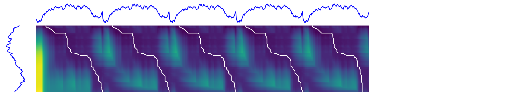

Note
Click here to download the full example code
sDTW multi path matching¶
This example illustrates how subsequent DTW can be used to find multiple matches of a sequence in a longer sequence.
A potential usecase is to identify the occurrence of certain events in continuous sensor signals. As one example Barth et al. [1] used this method to find stride in sensor recordings of gait.
The example demonstrates the use of the functions subsequence_cost_matrix and subsequence_path to manually calculate warping paths from multiple potential alignments. If you are only interested in finding the optimal alignment, you can directly use dtw_subsequence_path.
[1] Barth, et al. (2013): Subsequence dynamic time warping as a method for robust step segmentation using gyroscope signals of daily life activities, EMBS, https://doi.org/10.1109/EMBC.2013.6611104
Out:
Shape long sequence: (500, 1)
Shape short sequence: (100, 1)
# Author: Arne Kuederle
# License: BSD 3 clause
import matplotlib.pyplot as plt
import numpy
from scipy.signal import find_peaks
from tslearn import metrics
from tslearn.generators import random_walks
from tslearn.preprocessing import TimeSeriesScalerMeanVariance
numpy.random.seed(0)
n_ts, sz, d = 2, 100, 1
n_repeat = 5
dataset = random_walks(n_ts=n_ts, sz=sz, d=d)
scaler = TimeSeriesScalerMeanVariance(mu=0., std=1.) # Rescale time series
dataset_scaled = scaler.fit_transform(dataset)
# We repeat the long sequence multiple times to generate multiple possible
# matches
long_sequence = numpy.tile(dataset_scaled[1], (n_repeat, 1))
short_sequence = dataset_scaled[0]
sz1 = len(long_sequence)
sz2 = len(short_sequence)
print('Shape long sequence: {}'.format(long_sequence.shape))
print('Shape short sequence: {}'.format(short_sequence.shape))
# Calculate the accumulated cost matrix
mat = metrics.subsequence_cost_matrix(short_sequence,
long_sequence)
# Calculate cost function
cost_func = mat[-1, :]
# Identify potential matches in the cost function (parameters are tuned to
# fit this example)
potential_matches = find_peaks(-cost_func, distance=sz * 0.75, height=-50)[0]
# Calculate the optimal warping path starting from each of the identified
# minima
paths = [metrics.subsequence_path(mat, match) for match in
potential_matches]
plt.figure(1, figsize=(6 * n_repeat, 6))
# definitions for the axes
left, bottom = 0.01, 0.1
h_ts = 0.2
w_ts = h_ts / n_repeat
left_h = left + w_ts + 0.02
width = height = 0.65
bottom_h = bottom + height + 0.02
rect_s_y = [left, bottom, w_ts, height]
rect_gram = [left_h, bottom, width, height]
rect_s_x = [left_h, bottom_h, width, h_ts]
ax_gram = plt.axes(rect_gram)
ax_s_x = plt.axes(rect_s_x)
ax_s_y = plt.axes(rect_s_y)
ax_gram.imshow(numpy.sqrt(mat))
ax_gram.axis("off")
ax_gram.autoscale(False)
# Plot the paths
for path in paths:
ax_gram.plot([j for (i, j) in path], [i for (i, j) in path], "w-",
linewidth=3.)
ax_s_x.plot(numpy.arange(sz1), long_sequence, "b-", linewidth=3.)
ax_s_x.axis("off")
ax_s_x.set_xlim((0, sz1 - 1))
ax_s_y.plot(- short_sequence, numpy.arange(sz2)[::-1], "b-", linewidth=3.)
ax_s_y.axis("off")
ax_s_y.set_ylim((0, sz2 - 1))
plt.show()
Total running time of the script: ( 0 minutes 0.943 seconds)